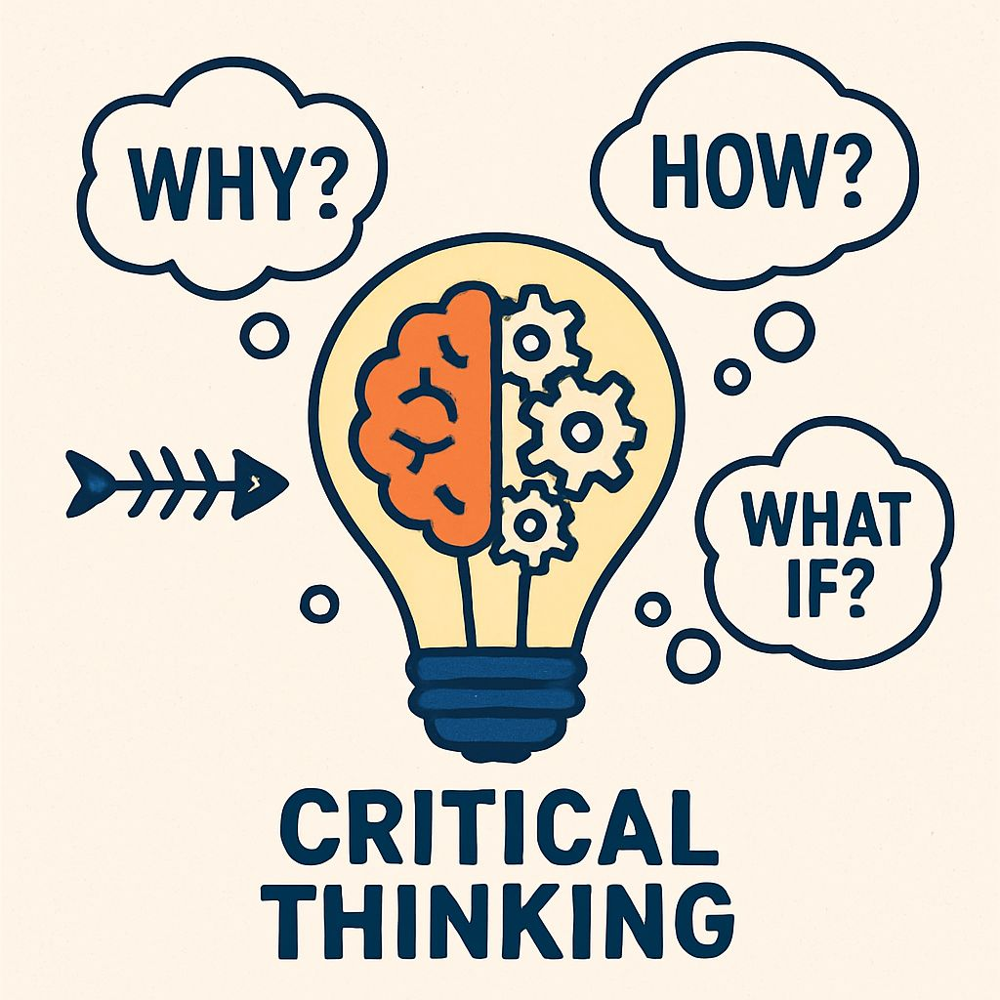

Module 1: Cultivating the Essential GLP QA Auditor Mindset
Lesson 1.4: The Art of Observation and Cultivating Reasoning: Attention to Detail and Critical Thinking in GLP
Introduction: Beyond the Obvious
You've learned about the urgency of data integrity, the "Quality First" imperative, and the pillars of professionalism. Now, let's delve into the practical skills that bring these principles to life: the art of observation, attention to detail, and the power of critical thinking and reasoning. An elite QA auditor doesn't just see what's presented; they observe what's missing, question what's unclear, and connect seemingly disparate pieces of information to form a complete picture.
This lesson will equip you with the mindset to look beyond the surface and apply logical reasoning to identify potential issues and ensure robust GLP compliance.
Bite-sized Lesson: Defining Key Skills
These skills are interconnected and crucial for effective auditing:
Observation: This is active, purposeful seeing. It's not just looking at a document or process, but consciously noticing details, patterns, anomalies, and inconsistencies. It involves all senses where appropriate (e.g., observing lab conditions, not just reading logs).
Attention to Detail: The ability to focus on minute elements, ensuring precision and accuracy in your review. This means catching small errors, subtle deviations, or incomplete entries that others might miss.
Critical Thinking: The objective analysis and evaluation of information to form a judgment. It involves questioning assumptions, considering alternative explanations, and assessing the validity and reliability of data and processes.
Reasoning: The process of drawing conclusions from facts or premises. In auditing, this means logically deducing potential problems or root causes based on your observations and critical analysis. It's about connecting the dots.
Simplified Explanation: Connecting the Dots
Imagine you're a detective. A checklist tells you what evidence to look for. Observation helps you find it. Attention to detail ensures you don't miss a crucial fingerprint. Critical thinking helps you evaluate if the evidence is reliable. Reasoning helps you piece together the story and figure out "whodunit" (or in our case, "what went wrong" and "why").
From Passive to Active: Instead of just verifying a signature, observe *how* the signature looks, *where* it's placed, and *when* it was made in relation to other entries.
From Isolated to Integrated: Don't just look at one document in isolation. Think about how it connects to other documents, equipment, personnel, and processes across departments.
From "What" to "Why": When you find a discrepancy, don't just note it. Ask "why did this happen?" and then "why did *that* happen?" (the 5 Whys technique) to uncover the root cause.
Real-World Example: Uncovering a Data Integrity Issue from a Study Plan Deviation in Pathology
Scenario: You are conducting a phase audit of a Toxicology study, specifically reviewing the raw data for macroscopic (gross) and microscopic (histopathology) findings from the Pathology department. The Study Plan explicitly states that "all tissues from animals exhibiting severe clinical signs (e.g., neurological symptoms, severe respiratory distress) must undergo full histopathological examination, even if not part of the standard tissue list for the study."
While reviewing the Pathology report, you cross-reference it with the Animal (in-life) department's daily observation logs.
You notice that for two animals in the high-dose group, the daily observation logs clearly record "severe neurological symptoms" (e.g., seizures, ataxia) for several days prior to scheduled sacrifice.
However, when you examine the Pathology report for these specific animals, the listed tissues for microscopic examination only include the *standard* set, and there is no mention of additional neurological tissues (e.g., brain, spinal cord, peripheral nerves) being collected or examined, nor any explanation for their absence.
Critical Thinking & Questioning:
"The Study Plan clearly mandates examination of *all* tissues for severe clinical signs. Why are the neurological tissues missing for these animals?"
"Was this deviation from the Study Plan documented and approved via a Study Plan Amendment or Deviation Report?" (A quick check of the study file reveals no such documentation).
"Were these tissues collected but not examined, or were they not collected at all?"
"What is the impact of this omission on the scientific interpretation of the test article's effects, particularly regarding neurotoxicity?"
Reasoning & Connecting the Dots (Data Integrity & Consequences):
Data Integrity Issue: The absence of required raw data (pathology findings for specific tissues) constitutes a critical data integrity breach. The study record is incomplete and does not accurately reflect compliance with the approved Study Plan. This is not just a procedural deviation; it's a fundamental gap in the scientific data that was supposed to be generated.
Consequences to be Addressed:
Compromised Scientific Validity: The study's ability to fully characterize the test article's toxicity, especially neurotoxicity, is severely compromised. This could lead to an incomplete or misleading safety profile.
Regulatory Non-Compliance: This is a direct, undocumented deviation from the approved Study Plan, a significant GLP non-compliance that would be a major finding during a regulatory inspection.
Impact on Study Conclusions: The Toxicology department's final report may lack critical information to draw accurate conclusions about the test article's effects on the nervous system.
Potential for Study Disqualification: Depending on the severity and impact, such a finding could lead to the disqualification of the study or a significant portion thereof by regulatory authorities.
Remediation: Requires immediate documentation of the deviation, a thorough root cause analysis (e.g., communication breakdown, training gap, oversight), and a comprehensive CAPA plan. This might include attempts to locate and examine the missing tissues (if collected), or a clear scientific justification for why the data cannot be obtained and its impact on the study's interpretability.
Key Takeaways from Example:
Study Plan as a Contract: The Study Plan is a binding document; deviations must be documented and justified. Undocumented deviations are critical data integrity issues.
Subtlety Matters: Significant data integrity issues can be uncovered by meticulously cross-referencing different raw data sets and comparing them against the Study Plan.
Holistic View: Missing data in one area (Pathology) can be revealed by observations in another (Animal logs) and have profound impacts on the entire study's scientific validity.
The Power of "Why?": Don't just note the absence; ask "why is it missing?" and "what are the consequences?" to uncover the full scope of the problem.
Cultivating Strong Critical Thinking and Reasoning Skills
Becoming an elite QA auditor means continuously sharpening your cognitive tools. Here's a step-by-step approach to strengthen your critical thinking and reasoning abilities:
Ask Probing Questions (The "Why" and "How"):
Don't just accept information at face value. For every statement, process step, or data point, ask: "Why is it done this way?" "How does this connect to the overall study/system?" "What is the purpose?" "What if it were done differently?"
GLP Example: You find a missing signature on a raw data sheet. Instead of just noting "missing signature," ask: "Why is this signature missing *here* but present elsewhere?" "How does this impact data traceability?" This leads to uncovering a potential training gap or a systemic issue with document control.
Challenge Assumptions (Including Your Own):
Identify the underlying assumptions in a process, a statement, or even your own initial assessment. Are these assumptions valid? What evidence supports them?
Consider alternative explanations for observations before settling on the most obvious one.
GLP Example: You assume a piece of equipment is calibrated because the sticker says so. Challenge this: "Is the sticker current?" "Does the calibration certificate confirm the sticker's date and the required parameters?" This might reveal an expired calibration or an out-of-tolerance result.
Seek Diverse Perspectives:
Talk to different people involved in a process (e.g., the technician, the supervisor, the study director). Their varied viewpoints can reveal blind spots or provide missing pieces of the puzzle.
Engage with other QA auditors to discuss complex issues and gain new insights.
GLP Example: When auditing a complex sample tracking process, interview the person who logs samples in, the person who processes them, and the person who archives them. Each might have a different understanding or workaround that impacts the overall data flow.
Practice Pattern Recognition:
Actively look for trends, anomalies, and recurring issues across different audits, studies, or departments.
Compare current observations to historical data or expected norms. What stands out? What doesn't fit?
GLP Example: You notice that 3 out of the last 5 studies from the same department have deviations related to instrument calibration. This pattern suggests a systemic issue (e.g., training, maintenance schedule, SOP clarity) rather than isolated incidents.
Break Down Complex Problems:
When faced with a large or convoluted issue, break it into smaller, manageable parts. Analyze each component individually, then synthesize them back together.
Utilize tools like Fishbone (Ishikawa) diagrams to visually organize potential causes.
GLP Example: Investigating a large-scale data migration error from an old system to a new one. Break it down: data extraction, data transformation, data loading, data verification. Analyze each stage for potential failure points.
Develop a "Pre-Mortem" Mindset:
Before a process is implemented or a study begins, ask: "What could go wrong here?" "What are the potential failure points?" This proactive thinking helps you anticipate risks and identify controls.
GLP Example: Before a new electronic data capture system is rolled out, consider: "What if the system crashes during data entry?" "How will audit trails be maintained?" "Is there a robust backup strategy?" This helps identify potential data integrity risks before they become issues.
Engage in Continuous Learning:
Stay updated on GLP regulations, industry best practices, and the scientific principles underlying the studies you audit. A deeper understanding of the science allows for more informed critical analysis.
Read scientific literature, regulatory guidance documents, and quality management texts.
GLP Example: Regularly review new FDA or OECD guidance documents on data integrity or specific GLP areas (e.g., bioanalysis, pathology) to ensure your audit approach is current and comprehensive.
Reflect and Debrief:
After each audit or significant finding, take time to reflect on your own thought process. What did you do well? Where could you have dug deeper? What questions should you have asked?
Seek constructive feedback from your QA manager or senior auditors.
GLP Example: After an audit where a significant finding was initially missed but later discovered, analyze your audit process: "Did I spend enough time on this section?" "Was my sampling adequate?" "What assumptions did I make?" This self-assessment improves future audits.

Checkpoint: Quick Quiz
During a review of a Bioanalysis study's raw data, you notice several instances where the calculation of sample concentrations has been manually overwritten, with no clear initial, date, or reason for the change. Which skill is MOST critical for the QA auditor to apply first?
Immediately issuing a critical finding for data manipulation.
Asking the analyst why they made the changes.
Observing the pattern of changes and applying critical thinking to assess the potential impact and identify the root cause.
Checking if the final reported concentration matches the overwritten value.
Correct Answer: c) Observing the pattern of changes and applying critical thinking to assess the potential impact and identify the root cause.
Explanation: While all options might eventually be part of the process, an elite auditor would first observe the *pattern* of changes (e.g., are they always upward? always downward? specific to certain samples?) and critically think about the *potential impact* on data integrity and the *likely root cause* (e.g., training issue, calculation error, intentional manipulation) before jumping to conclusions or just verifying the final number. This systematic approach is key.
Reading List (For Deeper Dive - 10-15 minutes)
OECD Series on Principles of GLP and Compliance Monitoring, No. 1:OECD Principles of Good Laboratory Practice (as revised in 1997) - Focus on Section 2.1 (Study Conduct) and Section 2.3 (Records and Reports), emphasizing the need for accurate and complete raw data. (Available on OECD website)
21 CFR Part 58:Good Laboratory Practice for Nonclinical Laboratory Studies - Review Subpart D (Equipment), Subpart J (Records and Reports), and Subpart K (Disqualification of Nonclinical Laboratory Studies) for requirements around data integrity. (Available on FDA website)
"Thinking, Fast and Slow" by Daniel Kahneman: While not directly GLP, this book provides profound insights into cognitive biases and how to approach critical thinking more effectively. (Available in libraries or online)
Relevant Tools/Resources
Root Cause Analysis Tools: Fishbone diagrams (Ishikawa), 5 Whys, Pareto analysis – these help structure your reasoning to find underlying causes.
Data Trend Analysis Software: Even simple spreadsheets can help visualize data over time to spot anomalies.
Your Organization's Data Integrity Policy: Understand the expectations for data recording, review, and correction.
Scenario Analysis: You are auditing the Test Item Management department. You notice that the logbook for a particular test item shows several entries where the "amount dispensed" is significantly higher than the "amount requested" by the Toxicology department for a specific period. How would you apply observation, attention to detail, critical thinking, and reasoning to investigate this? What questions would you ask, and what other records would you consult to understand the full implications?
Personal Reflection: Think about a time you found an issue during an audit. Did you stop at the obvious, or did you dig deeper? How could applying the "Art of Observation and Cultivating Reasoning" have changed your approach or the outcome?